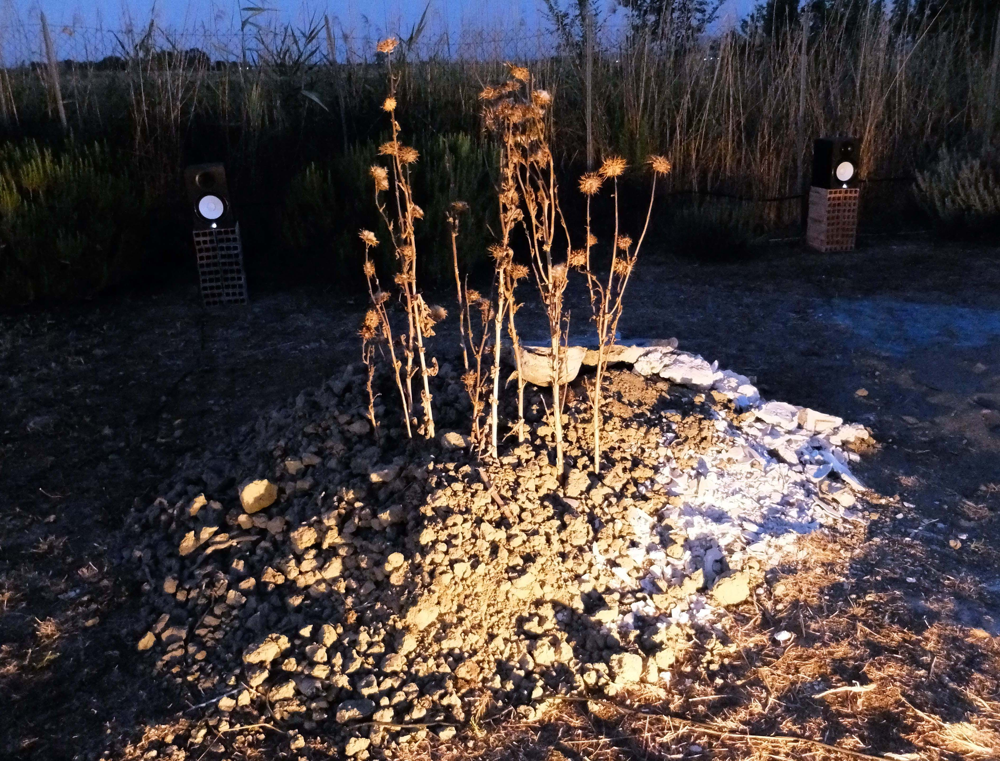
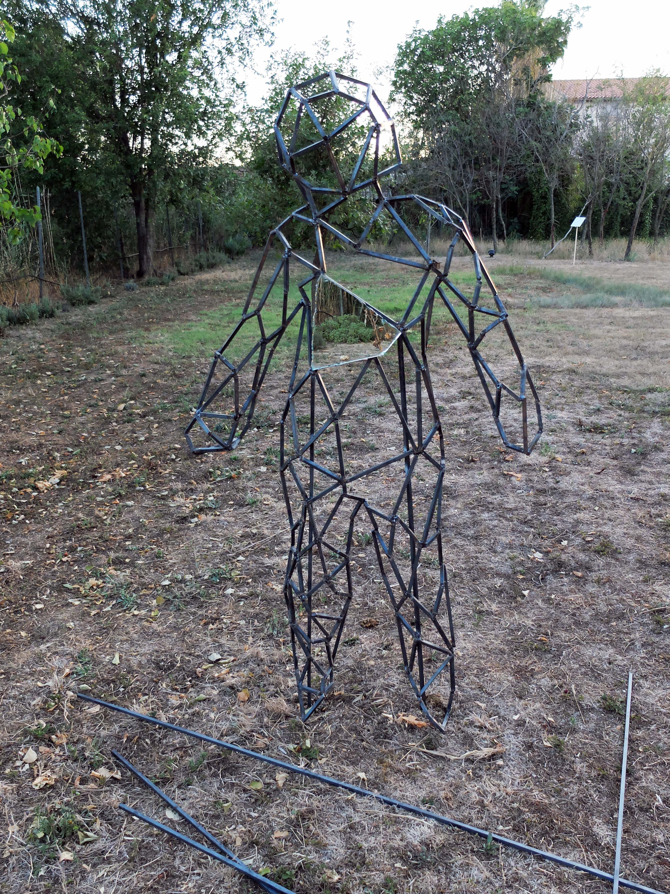
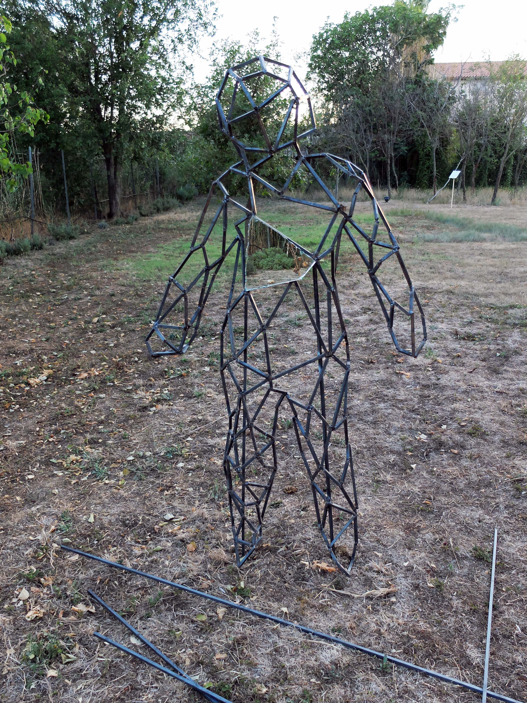
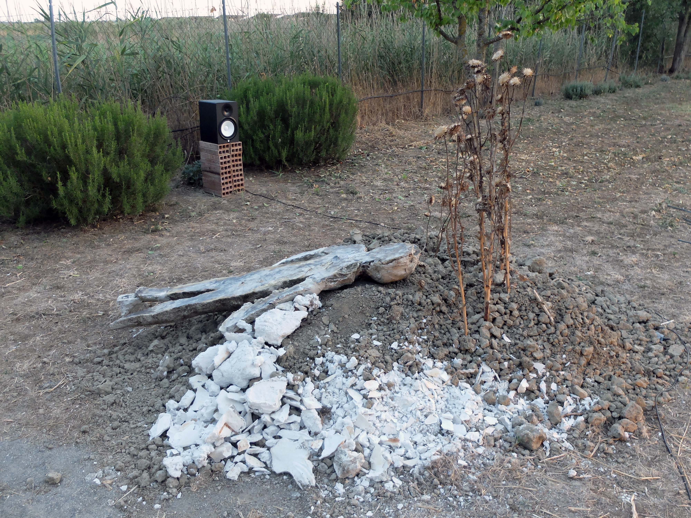
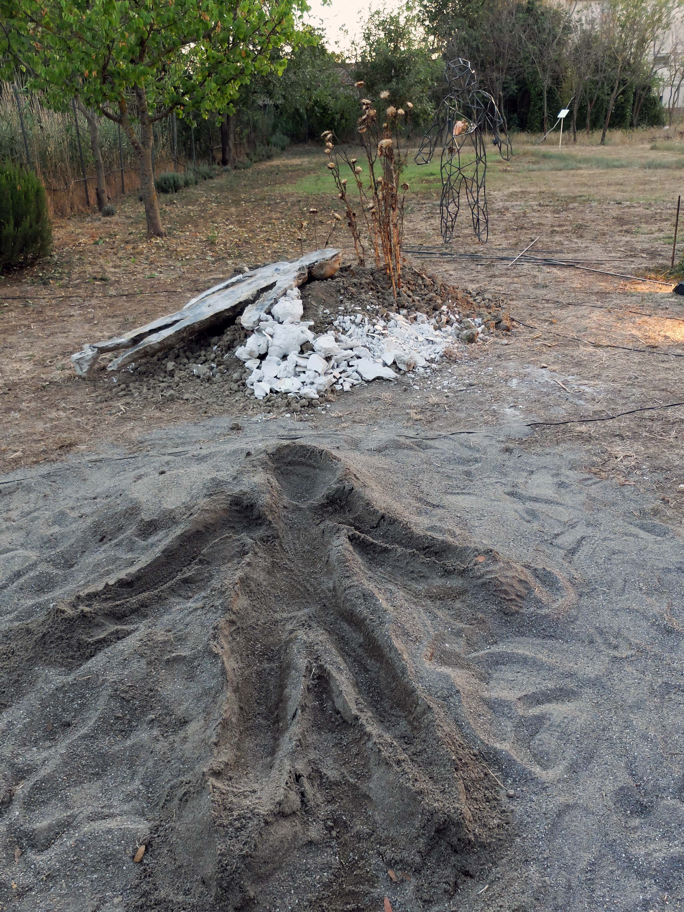
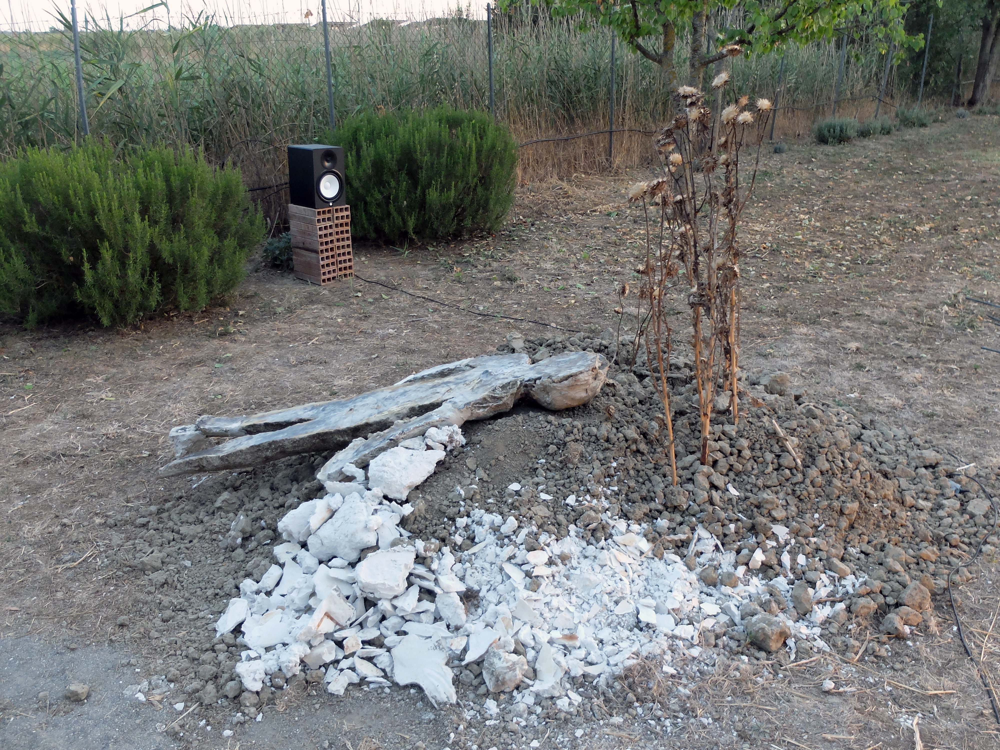
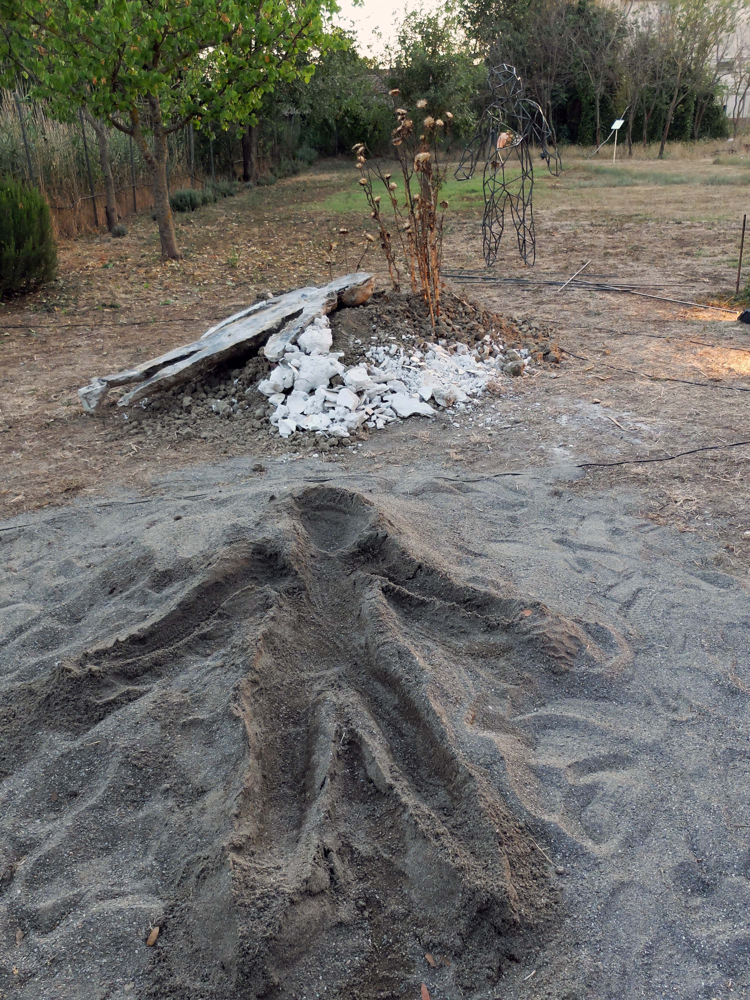

Audiovisual interactive installation realised in Grosseto from 10 to 15/7/2017.
Is there a continuity between the traces, the one left in the landscape and the ones it left in us?
The imprint is this milimetric gap between the ground and what was a part of my body, its a temporal inconsistency, something being here and at the same time already gone and that caries in itself its future, its erasure, an existence in counter-relief, temporary, a presence in the absence written in the materiality of the nature.
This nature is passage, process, composed by a an ensemble of events which are overlaying each other.
The human being is not an observer in front of it, but he is a part of the passage of the nature, through its body which is a perceiving event, he grips the events of the nature.
The trace is the intersecting point, the visible outline of this fusion, both physical and symbolic, between the human and the nature.
If the footprint of mankind on its environment is often visible and criticized, how can we however interact, mark it positively, and can we see/feel the one it does on us?
Because the trace is not a one-sided process, but works, at least, by two, there is a reciprocity between the human and the nature. I am through my body part of the nature and the parts of the nature enter in relation with it, like the double movement of the beats of one same heart.
This audiovisual and interactive installation offers an interpretation of this conception of nature as process, to understand the human inside the nature and the vice versa. It shows this duality unified, its congruence and interactions and tests them directly, give them to the free choice of the visitors.
Pics:

 

 


